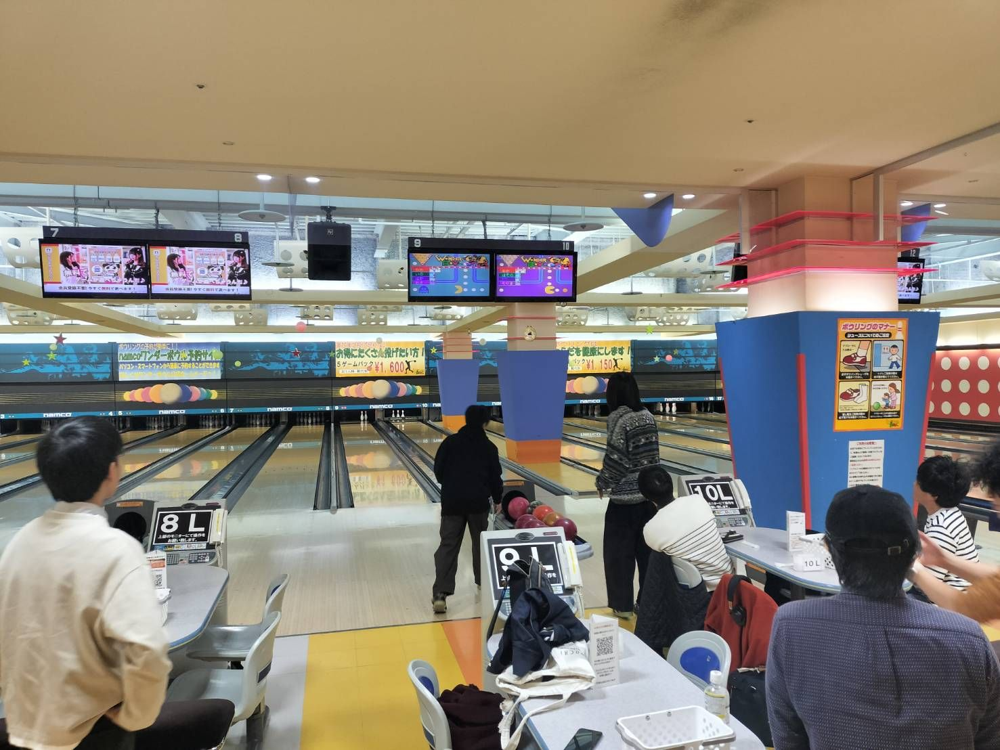

山登り・アウトドア行事 [要確認]
研究の合間に自然の中でリフレッシュし、学年を超えた親睦を深める行事です。[要確認：詳細内容]
メンバー同士の交流を深める年間イベントの概要です。
研究の合間に自然の中でリフレッシュし、学年を超えた親睦を深める行事です。[要確認：詳細内容]
体を動かしながらメンバー同士で交流するスポーツイベントです。[要確認：開催頻度・詳細]
研究室メンバーで集まり、ボウリングを通じて親睦を深めるレクリエーション行事です。[要確認：詳細内容]
新入生歓迎や節目の集まりなど、年間を通じた研究室のイベントを実施しています。[要確認：具体的な行事名]
日々のゼミや実験で得た知見をまとめ、学会や研究会で発表しています。
[要確認：発表内容の分かりやすい概要説明。専門用語を使う場合は高校生・学部1〜3年生にも伝わる短い補足を記載します。]
[要確認：発表の概要や、どのような議論が行われたかの説明を記載します。]
研究だけでなく、メンバー同士のつながりを大切にするレクリエーションや季節の行事です。
[要確認：行き先や活動の様子についての説明文。]
[要確認：活動場所や参加メンバーの雰囲気についての説明文。]

[要確認：実施場所や当日の様子についての説明文。]
[要確認：歓迎会・追いコン・学園祭など、確定した年間行事の内容。]
掲載許可を確認済みの活動写真を順次掲載します。
年度ごとの主な学会発表・研究室イベントの履歴です。